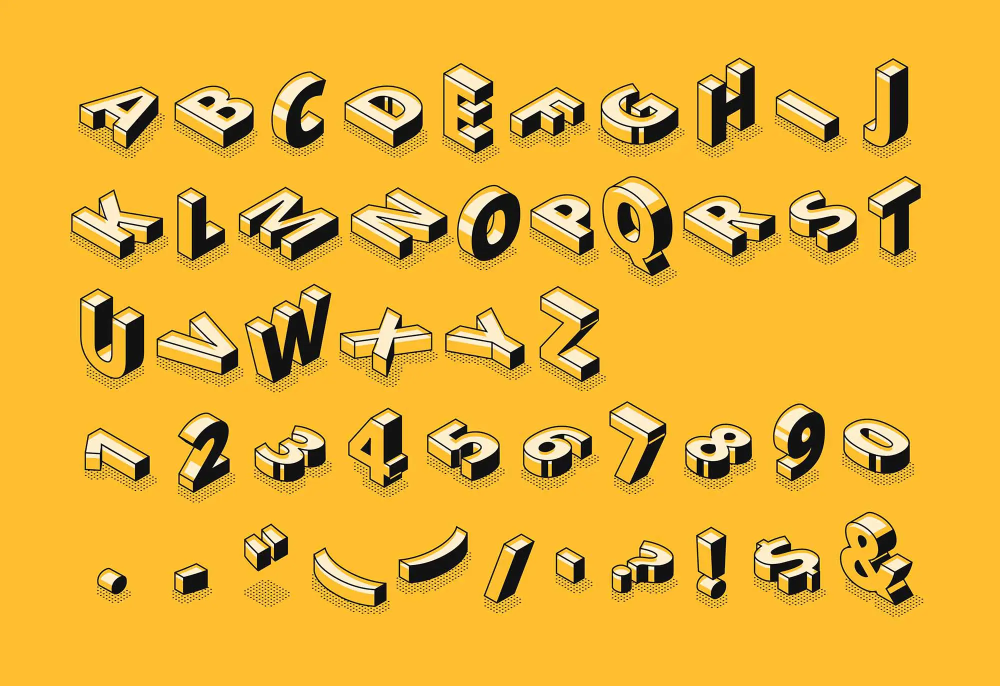

Ripasso
Definizione e Famiglie
Il carattere tipografico è un insieme di numeri e segni accomunati dallo stesso stile. La famiglia tipografica è un gruppo di font che seguono gli stessi criteri di aspetto e struttura. I caratteri sono raggruppati per famiglie con varianti di spessore, larghezza e inclinazione.
Categorie
I serif (con grazie) e i sans serif (senza grazie) sono le principali categorie. I serif sono detti anche graziati, i sans serif anche bastoni.


Anatomia
Ogni lettera è composta da varie parti: linea di base, ascendente, discendente, apice, vertice, asta, asta trasversale e barra.

Varianti
Spessore delle aste
Le aste possono essere uniformi o modulari.

Larghezza
Definisce la larghezza complessiva del carattere.

Pendenza
Inclinazione del carattere rispetto alla linea verticale.

Allineamento e Spaziatura
Allineamento
Bandiera (sinistra), centrale e giustificato.

Crenatura e Tracking
Crenatura: spazio tra due lettere specifiche.
Tracking: spaziatura uniforme tra tutte le lettere di una parola o riga.

Interlinea
Distanza tra la linea di base di una riga e quella successiva. Fondamentale per leggibilità.

Pittogrammi e Loghi
I pittogrammi sono simboli grafici che rappresentano concetti o oggetti. Gli ideogrammi rappresentano idee o concetti in forma visiva.

I loghi sono marchi grafici che identificano un'azienda o un prodotto. Devono essere chiari, riconoscibili e leggibili anche per persone con disabilità visiva.